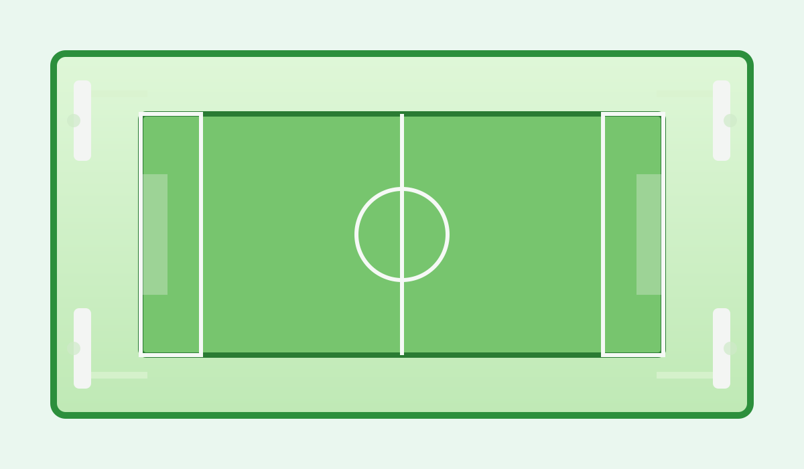

Sân bóng mini Hòa Khánh

Thông tin chung
- Địa điểm: Khu vực Hòa Khánh, Đà Nẵng
- Loại sân: Sân bóng 5 người
- Giá thuê: 250.000 VNĐ mỗi giờ
- Thời gian hoạt động: 06:00 - 23:00
- Trạng thái: Đang hoạt động
Tiện ích của sân
- Mặt sân cỏ nhân tạo
- Hệ thống đèn chiếu sáng ban đêm
- Khu vực để xe
- Phòng thay đồ
- Nước uống cho người chơi
Thông số kỹ thuật
| Tiêu chí | Thông tin |
|---|---|
| Diện tích sân | 500 m² |
| Loại mặt sân | Cỏ nhân tạo |
| Độ dài | 25 m |
| Độ rộng | 15 m |
Vị trí tham khảo
Bản đồ dưới đây giúp người dùng tham khảo vị trí sân bóng trong khu vực Đà Nẵng.
Đặt sân
Nếu muốn đặt sân, vui lòng truy cập trang Liên hệ / Đặt sân để gửi thông tin.